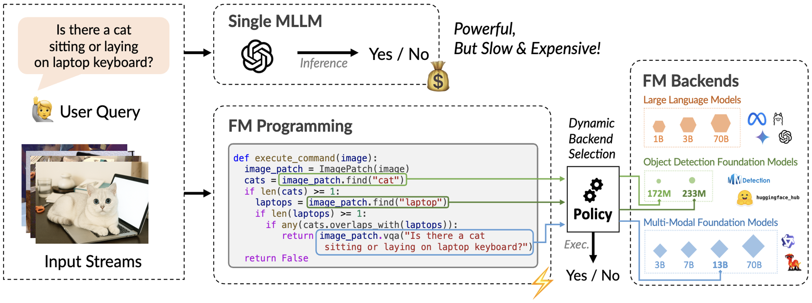
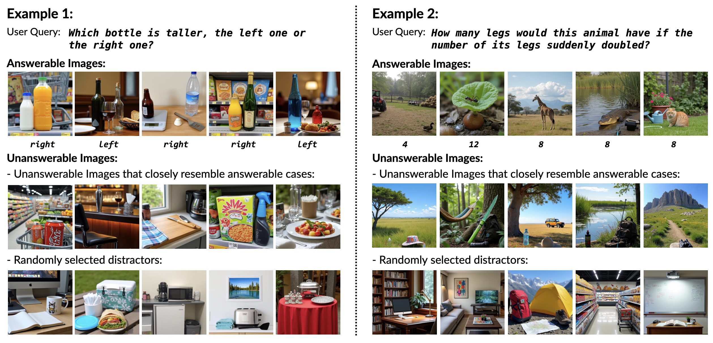

Key Takeaways
🧩Treat complex AI tasks as programs with explicit steps and branches so cheap modules handle easy cases and expensive models are reserved for the hard ones.
⚖️Optimize an online policy that jointly balances accuracy and compute per input, rather than chasing accuracy alone with a fixed model stack.
🔌Separate task logic from model backends to stay modular, swap components as models evolve, and continually improve the accuracy–cost Pareto frontier.
Foundation Model Programming

Program agent as FMPs: Express agentic task as neurosymbolic program that calls generic functions (e.g., object detector, VQA), each with a set of backend models spanning cost–quality trade-offs.
Decide per call, online: Synthesize the program offline, then—at inference—learn a policy that picks the backend for each function call to optimize an accuracy–cost objective on every input.
Learn with structure & exploration: Use structured REINFORCE for per-call credit assignment and gradient-based Thompson Sampling to explore backends, balancing prediction loss against execution cost.
Streaming VQA Benchmarks
Streaming Binary VQA: 33 compositional yes/no queries, each with >2k COCO images and a ~1:100 positive–negative imbalance.
Streaming Open-form VQA: 50 queries with 500 images each, featuring look-alike distractors across five reasoning types.

Citation
@article{nie2025resource,
title={Resource-efficient Inference with Foundation Model Programs},
author={Nie, Lunyiu and Ding, Zhimin and Yu, Kevin and Cheung, Marco and Jermaine, Chris and Chaudhuri, Swarat},
journal={arXiv preprint arXiv:2504.07247},
year={2025}
}